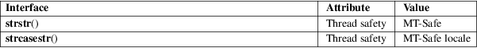

strstr, strcasestr − locate a substring
Standard C library (libc, −lc)
#include <string.h>
char *strstr(const char *haystack, const char *needle);
#define
_GNU_SOURCE /* See feature_test_macros(7) */
#include <string.h>
char *strcasestr(const char *haystack, const char *needle);
The strstr() function finds the first occurrence of the substring needle in the string haystack. The terminating null bytes ('\0') are not compared.
The strcasestr() function is like strstr(), but ignores the case of both arguments.
These functions return a pointer to the beginning of the located substring, or NULL if the substring is not found.
If needle is the empty string, the return value is always haystack itself.
For an explanation of the terms used in this section, see attributes(7).

strstr()
C11, POSIX.1-2008.
strcasestr()
GNU.
strstr()
POSIX.1-2001, C89.
strcasestr()
GNU.
memchr(3), memmem(3), strcasecmp(3), strchr(3), string(3), strpbrk(3), strsep(3), strspn(3), strtok(3), wcsstr(3)